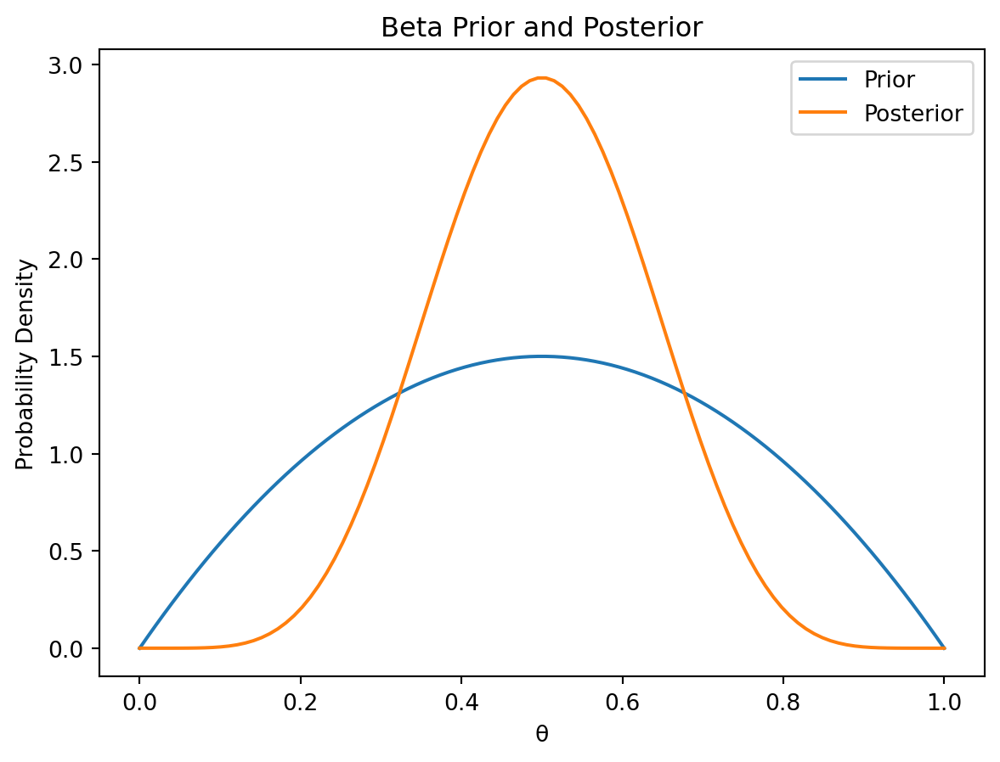
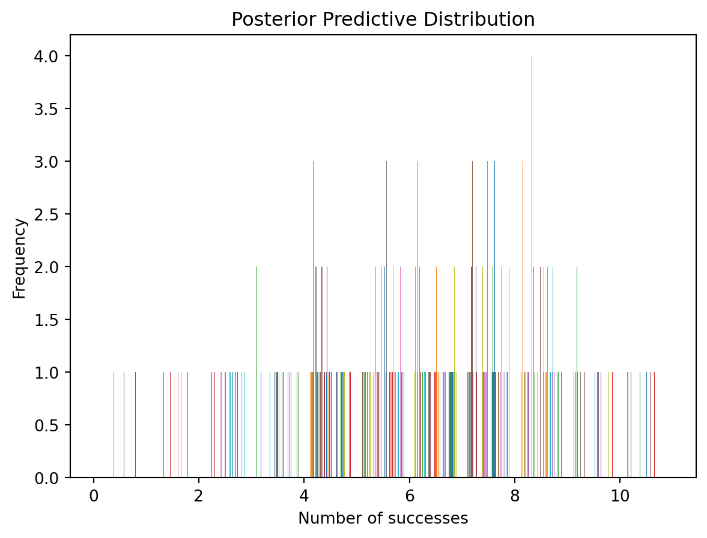
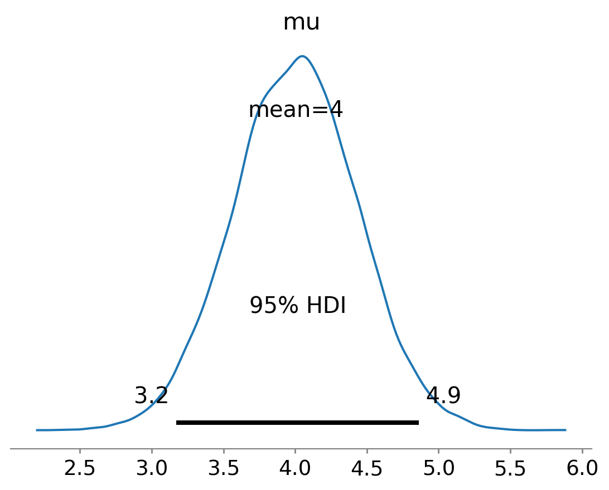
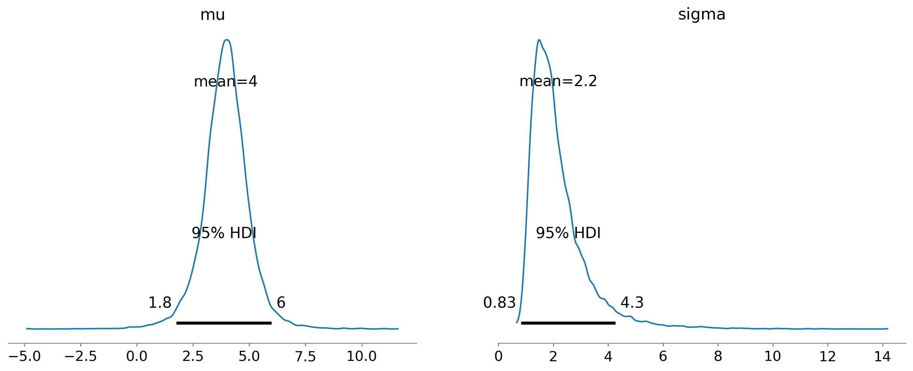
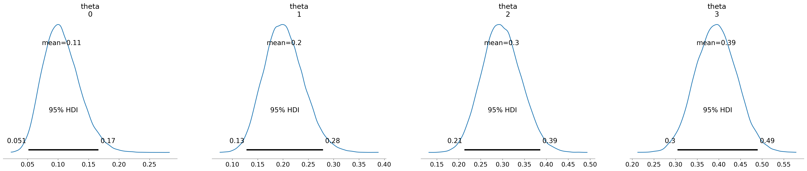
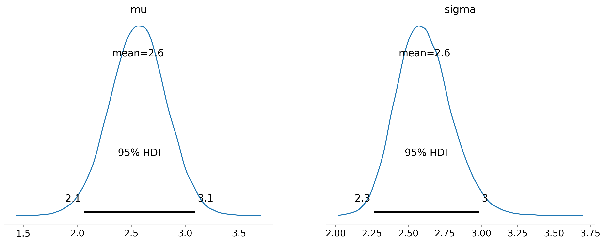
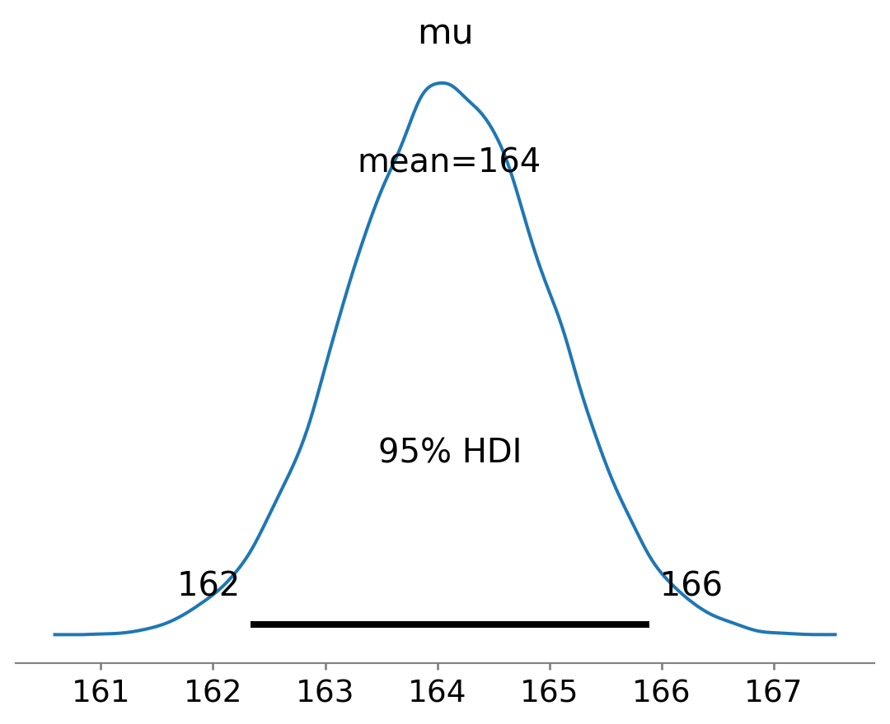

Bayesian inference involves updating our prior beliefs about a parameter \(\theta\) given observed data \(X\). We represent our prior beliefs using a prior distribution \(p(\theta)\). After observing data, we update our beliefs using Bayes’ theorem:
where \(p(\theta|X)\) is the posterior distribution, \(p(X|\theta)\) is the likelihood function, and \(p(X)\) is the marginal likelihood (often a normalizing constant). Calculating the posterior distribution can be computationally challenging. This is where conjugate priors come in handy.
A conjugate prior is a prior distribution that, when combined with the likelihood function, results in a posterior distribution that belongs to the same family of distributions as the prior. This simplifies calculations significantly, as the posterior’s parameters can be determined directly from the prior and the likelihood, without resorting to complex numerical integration or approximation techniques. This elegance makes conjugate priors a powerful tool in Bayesian analysis, especially for pedagogical purposes and in situations where computational resources are limited.
12.0.2 What are Conjugate Priors?
Formally, let \(p(\theta)\) be the prior distribution and \(p(X|\theta)\) be the likelihood function. If the posterior distribution \(p(\theta|X)\) is in the same family of distributions as the prior \(p(\theta)\), then the prior is said to be conjugate to the likelihood. The choice of conjugate prior depends heavily on the likelihood function. Some common examples include:
Beta distribution as a conjugate prior for the Bernoulli likelihood: If we model the probability of success in a Bernoulli trial with a parameter \(\theta\), then a Beta distribution, \(Beta(\alpha, \beta)\), is a conjugate prior. The posterior will also be a Beta distribution with updated parameters.
Normal distribution as a conjugate prior for the Normal likelihood: If we model data as coming from a Normal distribution with unknown mean \(\mu\) and known variance \(\sigma^2\), then a Normal distribution, \(N(\mu_0, \sigma_0^2)\), is a conjugate prior for \(\mu\). The posterior will also be a Normal distribution.
Gamma distribution as a conjugate prior for the Poisson likelihood: If we model count data with a Poisson distribution, with parameter \(\lambda\), then a Gamma distribution, \(Gamma(\alpha, \beta)\), is a conjugate prior. The posterior will also be a Gamma distribution.
12.0.3 Advantages of Using Conjugate Priors
Analytical tractability: The biggest advantage is the ability to derive the posterior distribution analytically. This avoids computationally intensive methods like Markov Chain Monte Carlo (MCMC), making inference faster and easier.
Intuitive interpretation: The parameters of the conjugate prior often have intuitive interpretations, making it easier to specify the prior and understand the results. For example, the parameters of a Beta prior directly relate to our prior belief about the probability of success.
Simplicity: The mathematical expressions for updating the posterior are relatively simple and easy to implement.
12.0.4 Limitations of Conjugate Priors
Limited flexibility: The biggest limitation is the restriction to a specific family of distributions. If the true prior belief doesn’t closely resemble a conjugate prior, forcing the use of a conjugate prior can lead to inaccurate inferences.
Oversimplification: The assumption of conjugacy might oversimplify the true relationships in the data.
Potential for misspecification: Improperly choosing the parameters of the conjugate prior can significantly bias the posterior, leading to erroneous conclusions. Careful consideration is needed when selecting prior parameters.
import numpy as npimport matplotlib.pyplot as pltfrom scipy.stats import beta# Example: Beta prior and Bernoulli likelihood# Prior parametersalpha_prior =2beta_prior =2# Observed data (number of successes and failures)successes =5failures =5# Posterior parametersalpha_posterior = alpha_prior + successesbeta_posterior = beta_prior + failures# Generate x values for plottingx = np.linspace(0, 1, 100)# Plot prior and posterior distributionsplt.plot(x, beta.pdf(x, alpha_prior, beta_prior), label='Prior')plt.plot(x, beta.pdf(x, alpha_posterior, beta_posterior), label='Posterior')plt.xlabel('θ')plt.ylabel('Probability Density')plt.title('Beta Prior and Posterior')plt.legend()plt.show()

This Python code demonstrates the update of a Beta prior given Bernoulli data, illustrating the conjugacy property visually. The plot shows how the posterior distribution shifts based on the observed data.
12.1 Beta-Binomial Model
12.1.1 The Binomial Likelihood
The binomial distribution is a fundamental probability model for the number of successes in a fixed number of independent Bernoulli trials. Each trial has a probability of success \(\theta\), where \(0 \le \theta \le 1\). If we observe \(k\) successes in \(n\) trials, the likelihood function is given by:
where \(\binom{n}{k} = \frac{n!}{k!(n-k)!}\) is the binomial coefficient. This likelihood describes the probability of observing \(k\) successes given the parameters \(n\) and \(\theta\). In a Bayesian context, we treat \(\theta\) as a random variable, and the likelihood quantifies the plausibility of different values of \(\theta\) given the observed data.
12.1.2 The Beta Prior
A natural choice for the prior distribution of \(\theta\) is the Beta distribution. The Beta distribution is defined on the interval [0, 1] and is parameterized by two positive shape parameters, \(\alpha\) and \(\beta\):
where \(B(\alpha, \beta) = \frac{\Gamma(\alpha)\Gamma(\beta)}{\Gamma(\alpha+\beta)}\) is the Beta function, and \(\Gamma(\cdot)\) is the gamma function. The parameters \(\alpha\) and \(\beta\) control the shape of the distribution. A larger \(\alpha\) relative to \(\beta\) shifts the distribution towards larger values of \(\theta\), representing a prior belief that \(\theta\) is likely to be higher. Conversely, a larger \(\beta\) relative to \(\alpha\) shifts the distribution towards smaller values of \(\theta\). When \(\alpha = \beta = 1\), the Beta distribution is uniform, representing a lack of prior information.
12.1.3 Posterior Distribution Derivation
Because the Beta distribution is a conjugate prior for the binomial likelihood, the posterior distribution is also a Beta distribution. Applying Bayes’ theorem:
\(p(\theta|k, n, \alpha, \beta) \propto p(k|\theta, n) p(\theta|\alpha, \beta)\)
Ignoring terms that don’t depend on \(\theta\), we obtain:
\(p(\theta|k, n, \alpha, \beta) \propto \theta^{k+\alpha-1} (1-\theta)^{n-k+\beta-1}\)
This is the kernel of a Beta distribution with parameters \(\alpha' = \alpha + k\) and \(\beta' = \beta + n - k\). Therefore, the posterior distribution is:
\(p(\theta|k, n, \alpha, \beta) = Beta(\alpha + k, \beta + n - k)\)
12.1.4 Bayesian Inference with Beta-Binomial
The Beta-Binomial model allows for straightforward Bayesian inference. We start with a Beta prior reflecting our prior beliefs about \(\theta\). After observing data (number of successes \(k\) in \(n\) trials), we update our beliefs by calculating the posterior Beta distribution using the updated parameters \(\alpha' = \alpha + k\) and \(\beta' = \beta + n - k\). We can then use the posterior distribution to make inferences about \(\theta\), such as calculating credible intervals or point estimates (e.g., mean or median).
12.1.5 Python Implementation with PyMC
import pymc as pmimport numpy as npimport matplotlib.pyplot as plt# Observed datak =6# Number of successesn =10# Number of trials# Prior parametersalpha_prior =1beta_prior =1with pm.Model() as model:# Prior distribution theta = pm.Beta("theta", alpha=alpha_prior, beta=beta_prior)# Likelihood y_obs = pm.Binomial("y_obs", p=theta, n=n, observed=k)# Posterior sampling trace = pm.sample(10000, tune=1000)# Posterior analysispm.summary(trace)pm.plot_posterior(trace, hdi_prob=0.95)plt.show()
Initializing NUTS using jitter+adapt_diag...
Multiprocess sampling (4 chains in 4 jobs)
NUTS: [theta]
/home/leopard/development/QuantumTraderX/venv/lib/python3.12/site-packages/rich/live.py:231: UserWarning: install
"ipywidgets" for Jupyter support
warnings.warn('install "ipywidgets" for Jupyter support')
Sampling 4 chains for 1_000 tune and 10_000 draw iterations (4_000 + 40_000 draws total) took 4 seconds.
/home/leopard/development/QuantumTraderX/venv/lib/python3.12/site-packages/rich/live.py:231: UserWarning: install
"ipywidgets" for Jupyter support
warnings.warn('install "ipywidgets" for Jupyter support')
KeysView(Inference data with groups:
> posterior_predictive
> observed_data)

This PyMC code defines a Beta-Binomial model, samples from the posterior distribution using Hamiltonian Monte Carlo (HMC), and visualizes the results. The posterior plot shows the updated belief about \(\theta\) after observing the data, and the posterior predictive distribution shows the probability of observing different numbers of successes in future experiments. Remember to install PyMC: pip install pymc
12.2 Normal-Normal Model
12.2.1 The Normal Likelihood
We often model continuous data using the normal (Gaussian) distribution. Suppose we have a sample of \(n\) data points, \(x_1, x_2, ..., x_n\), which are assumed to be independent and identically distributed (i.i.d.) from a normal distribution with unknown mean \(\mu\) and known variance \(\sigma^2\). The likelihood function is given by:
where \(X = (x_1, x_2, ..., x_n)\). This likelihood expresses the probability of observing the data given a specific value of \(\mu\) and the known \(\sigma^2\).
12.2.2 The Normal Prior
A conjugate prior for the normal mean \(\mu\) when the variance \(\sigma^2\) is known is another normal distribution. We specify a prior distribution for \(\mu\) as:
where \(\mu_0\) represents our prior belief about the mean, and \(\sigma_0^2\) represents the uncertainty in our prior belief. A smaller \(\sigma_0^2\) indicates a stronger prior belief.
12.2.3 Posterior Distribution Derivation
Using Bayes’ theorem, the posterior distribution is proportional to the product of the likelihood and the prior:
Here, \(\bar{x} = \frac{1}{n}\sum_{i=1}^{n}x_i\) is the sample mean. The posterior mean \(\mu_n\) is a weighted average of the prior mean \(\mu_0\) and the sample mean \(\bar{x}\), with weights inversely proportional to their respective variances. The posterior variance \(\sigma_n^2\) is smaller than both the prior and the sampling variance, reflecting the reduction in uncertainty after observing the data.
12.2.4 Bayesian Inference with Normal-Normal
The Normal-Normal model provides a straightforward way to update our beliefs about the mean of a normal distribution. The posterior distribution summarizes our updated beliefs after incorporating the data. We can obtain point estimates (e.g., posterior mean \(\mu_n\)) and credible intervals to quantify uncertainty.
12.2.5 Python Implementation with PyMC
import pymc as pmimport numpy as npimport matplotlib.pyplot as plt# Observed datadata = np.array([2, 3, 4, 5, 6])n =len(data)# Prior parametersmu_prior =4sigma_prior =2sigma =1# Known standard deviationwith pm.Model() as model:# Prior mu = pm.Normal("mu", mu=mu_prior, sigma=sigma_prior)# Likelihood y = pm.Normal("y", mu=mu, sigma=sigma, observed=data)# Posterior sampling trace = pm.sample(10000, tune=1000)pm.summary(trace)pm.plot_posterior(trace, hdi_prob=0.95)plt.show()
Initializing NUTS using jitter+adapt_diag...
Multiprocess sampling (4 chains in 4 jobs)
NUTS: [mu]
/home/leopard/development/QuantumTraderX/venv/lib/python3.12/site-packages/rich/live.py:231: UserWarning: install
"ipywidgets" for Jupyter support
warnings.warn('install "ipywidgets" for Jupyter support')
Sampling 4 chains for 1_000 tune and 10_000 draw iterations (4_000 + 40_000 draws total) took 4 seconds.

This code implements the Normal-Normal model in PyMC. The posterior distribution of \(\mu\) is visualized.
12.2.6 Handling Unknown Variance
When the variance \(\sigma^2\) is unknown, we need to introduce a prior for it. A common choice is the Inverse-Gamma distribution, which is conjugate to the normal likelihood for the variance. This makes the model more realistic but also more complex analytically. The complete model with unknown variance would require using techniques like MCMC sampling, which PyMC handles efficiently:
import pymc as pmimport numpy as npimport matplotlib.pyplot as plt# Observed datadata = np.array([2, 3, 4, 5, 6])n =len(data)with pm.Model() as model:# Priors mu = pm.Normal("mu", mu=0, sigma=10) # Weak prior on mu sigma = pm.HalfCauchy("sigma", beta=5) # Prior on sigma# Likelihood y = pm.Normal("y", mu=mu, sigma=sigma, observed=data)# Posterior sampling trace = pm.sample(10000, tune=1000, cores=1) # adjust cores as neededpm.summary(trace)pm.plot_posterior(trace, hdi_prob=0.95)plt.show()
Initializing NUTS using jitter+adapt_diag...
Sequential sampling (2 chains in 1 job)
NUTS: [mu, sigma]
/home/leopard/development/QuantumTraderX/venv/lib/python3.12/site-packages/rich/live.py:231: UserWarning: install
"ipywidgets" for Jupyter support
warnings.warn('install "ipywidgets" for Jupyter support')
Sampling 2 chains for 1_000 tune and 10_000 draw iterations (2_000 + 20_000 draws total) took 7 seconds.
We recommend running at least 4 chains for robust computation of convergence diagnostics

This example uses a Half-Cauchy prior for \(\sigma\), a common and relatively non-informative prior for scale parameters. Remember to adjust the number of cores (cores=) based on your system’s capabilities. The Half-Cauchy prior is used to avoid problems that can arise with using an Inverse Gamma prior with improper priors. It is important to be mindful of the effect that your chosen prior has on the posterior results.
12.3 Dirichlet-Multinomial Model
12.3.1 The Multinomial Likelihood
The multinomial distribution is a generalization of the binomial distribution to more than two outcomes. Suppose we have \(k\) categories and perform \(n\) independent trials. Let \(x_i\) be the number of trials resulting in category \(i\), where \(\sum_{i=1}^{k} x_i = n\). Let \(\theta_i\) be the probability of a trial resulting in category \(i\), where \(\sum_{i=1}^{k} \theta_i = 1\). The multinomial likelihood is given by:
where \(\binom{n}{x_1, ..., x_k} = \frac{n!}{x_1! ... x_k!}\) is the multinomial coefficient.
12.3.2 The Dirichlet Prior
The Dirichlet distribution is a conjugate prior for the multinomial distribution. It is defined over the \(k\)-dimensional probability simplex, i.e., the set of vectors \(\theta = (\theta_1, ..., \theta_k)\) such that \(\theta_i \ge 0\) for all \(i\) and \(\sum_{i=1}^{k} \theta_i = 1\). The Dirichlet distribution is parameterized by a vector of \(k\) positive concentration parameters, \(\alpha = (\alpha_1, ..., \alpha_k)\):
where \(B(\alpha) = \frac{\prod_{i=1}^{k} \Gamma(\alpha_i)}{\Gamma(\sum_{i=1}^{k} \alpha_i)}\) is the multivariate Beta function. The \(\alpha_i\) parameters influence the shape of the distribution. Larger values of \(\alpha_i\) lead to higher probability density around \(\theta_i = \frac{\alpha_i}{\sum_{j=1}^{k} \alpha_j}\).
12.3.3 Posterior Distribution Derivation
Since the Dirichlet is conjugate to the multinomial, the posterior distribution is also a Dirichlet distribution. The posterior parameters are updated by simply adding the observed counts to the prior parameters:
12.3.4 Bayesian Inference with Dirichlet-Multinomial
The Dirichlet-Multinomial model allows us to perform Bayesian inference on the parameters of a multinomial distribution. Starting with a Dirichlet prior reflecting our prior beliefs about the category probabilities, we update our beliefs using the observed counts to obtain a posterior Dirichlet distribution. We can use this posterior to make inferences, such as calculating credible intervals for each \(\theta_i\) or predicting the counts for future trials.
12.3.5 Python Implementation with PyMC
import pymc as pmimport numpy as np# Observed data (counts for each category)observed_counts = np.array([10, 20, 30, 40])k =len(observed_counts) # Number of categories# Prior parameters (concentration parameters) - weakly informative prioralpha_prior = np.ones(k)with pm.Model() as model:# Prior distribution theta = pm.Dirichlet("theta", a=alpha_prior)# Likelihood y = pm.Multinomial("y", n=sum(observed_counts), p=theta, observed=observed_counts)# Posterior sampling trace = pm.sample(10000, tune=1000)pm.summary(trace)pm.plot_posterior(trace, hdi_prob=0.95)plt.show()
Initializing NUTS using jitter+adapt_diag...
/home/leopard/development/QuantumTraderX/venv/lib/python3.12/site-packages/pytensor/link/c/cmodule.py:2959: UserWarning: PyTensor could not link to a BLAS installation. Operations that might benefit from BLAS will be severely degraded.
This usually happens when PyTensor is installed via pip. We recommend it be installed via conda/mamba/pixi instead.
Alternatively, you can use an experimental backend such as Numba or JAX that perform their own BLAS optimizations, by setting `pytensor.config.mode == 'NUMBA'` or passing `mode='NUMBA'` when compiling a PyTensor function.
For more options and details see https://pytensor.readthedocs.io/en/latest/troubleshooting.html#how-do-i-configure-test-my-blas-library
warnings.warn(
Multiprocess sampling (4 chains in 4 jobs)
NUTS: [theta]
/home/leopard/development/QuantumTraderX/venv/lib/python3.12/site-packages/rich/live.py:231: UserWarning: install
"ipywidgets" for Jupyter support
warnings.warn('install "ipywidgets" for Jupyter support')
Sampling 4 chains for 1_000 tune and 10_000 draw iterations (4_000 + 40_000 draws total) took 7 seconds.

This code implements the Dirichlet-Multinomial model in PyMC. Remember to install PyMC (pip install pymc). The posterior distributions for each \(\theta_i\) are shown.
12.3.6 Applications in Text Mining and other fields
The Dirichlet-Multinomial model finds widespread applications:
Text mining: Modeling the distribution of words in documents. Each category represents a word, and the \(\theta_i\) represent the probability of each word appearing in a document. The Dirichlet prior helps smooth the word probabilities, preventing zero probabilities for unseen words (especially helpful with large vocabularies).
Topic modeling: Identifying latent topics in a collection of documents. Each topic is a multinomial distribution over words, and the Dirichlet prior is used to control the sparsity of topic distributions.
Recommender systems: Modeling user preferences over items. Each item is a category, and the \(\theta_i\) represent the probability that a user will choose a given item.
Genetics: Modeling allele frequencies in populations. Each category is an allele, and \(\theta_i\) is the frequency of that allele.
Ecology: Species abundance in an ecosystem, where each category is a species.
The flexibility and analytical tractability of the Dirichlet-Multinomial model make it a valuable tool in various fields involving categorical data analysis.
12.4 Beyond the Basic Models
12.4.1 Other Conjugate Prior Pairs
While the Beta-Binomial, Normal-Normal, and Dirichlet-Multinomial models are frequently used, many other conjugate prior pairs exist, each tailored to a specific likelihood function. Here are a few examples:
Gamma-Poisson: The Gamma distribution is a conjugate prior for the Poisson likelihood. If \(X \sim Poisson(\lambda)\), and we use a Gamma prior for \(\lambda\), \(p(\lambda|\alpha, \beta) = Gamma(\alpha, \beta)\), then the posterior is also a Gamma distribution with updated parameters.
Inverse Gamma-Normal (for variance): The Inverse Gamma distribution is a conjugate prior for the variance of a normal distribution when the mean is known. If \(X \sim N(\mu, \sigma^2)\) and \(\mu\) is known, using an Inverse Gamma prior for \(\sigma^2\), \(p(\sigma^2 | \alpha, \beta) = InvGamma(\alpha, \beta)\), yields an Inverse Gamma posterior.
Normal-Inverse Gamma: This is a bivariate conjugate prior for the mean and variance of a normal distribution. The prior is a combination of a normal distribution for the mean (conditional on the variance) and an inverse gamma distribution for the variance.
These examples highlight the versatility of conjugate priors. The availability of a conjugate prior greatly simplifies Bayesian inference, but it’s essential to select the appropriate pair that matches the likelihood function and reflects your prior knowledge accurately.
12.4.2 Choosing Appropriate Conjugate Priors
Selecting the right conjugate prior involves many considerations:
Likelihood Function: The choice of prior is fundamentally determined by the likelihood function of your data. Only certain prior distributions form conjugate pairs with specific likelihoods.
Prior Knowledge: The prior should reflect your prior beliefs or existing knowledge about the parameter. If you have strong prior information, choose a prior that incorporates this information effectively. If you have little or no prior information, consider weakly informative priors that avoid unduly influencing the posterior.
Computational Tractability: While all conjugate priors lead to analytically tractable posteriors, some might be easier to work with than others depending on the complexity of the expressions involved.
Interpretability: The parameters of the chosen prior should be easily interpretable in the context of your problem. This allows for easier communication and understanding of the Bayesian analysis.
Choosing an inappropriate conjugate prior can lead to inaccurate or misleading results. It is essential to carefully consider the implications of the prior choice and to justify its selection.
12.4.3 Approximations when Conjugate Priors are Unavailable
In many practical situations, no conjugate prior exists for the given likelihood. In such cases, many approximation techniques can be employed:
Laplace Approximation: This method approximates the posterior distribution with a normal distribution centered at the mode of the posterior density. It’s relatively simple but might not be accurate if the posterior is highly skewed or multimodal.
Variational Inference: This technique approximates the true posterior with a simpler, tractable distribution from a specified family (e.g., a mean-field approximation). It offers flexibility but can be computationally intensive.
Markov Chain Monte Carlo (MCMC): MCMC methods, such as Hamiltonian Monte Carlo (HMC) or Metropolis-Hastings, are powerful tools for sampling from complex, high-dimensional posterior distributions. They are computationally intensive but generally provide accurate approximations. Libraries like PyMC automate these methods.
import numpy as npimport matplotlib.pyplot as pltimport pymc as pm# Example using PyMC for a non-conjugate scenario (illustrative)# Assume a likelihood that does not have a simple conjugate prior# Simulate some data (Example: a mixture of Gaussians)np.random.seed(0)data1 = np.random.normal(loc=0, scale=1, size=50)data2 = np.random.normal(loc=5, scale=0.5, size=50)data = np.concatenate((data1, data2))with pm.Model() as model:# Priors (Non-conjugate Example) mu = pm.Normal("mu", mu=0, sigma=10) sigma = pm.HalfCauchy("sigma", beta=5)# Likelihood (Example: mixture of gaussians, not directly conjugate) y = pm.Normal("y", mu=mu, sigma=sigma, observed=data)# Sample the posterior using MCMC trace = pm.sample(10000, tune=1000)pm.summary(trace)pm.plot_posterior(trace, hdi_prob=0.95)plt.show()
Initializing NUTS using jitter+adapt_diag...
Multiprocess sampling (4 chains in 4 jobs)
NUTS: [mu, sigma]
/home/leopard/development/QuantumTraderX/venv/lib/python3.12/site-packages/rich/live.py:231: UserWarning: install
"ipywidgets" for Jupyter support
warnings.warn('install "ipywidgets" for Jupyter support')
Sampling 4 chains for 1_000 tune and 10_000 draw iterations (4_000 + 40_000 draws total) took 4 seconds.

This PyMC code demonstrates how to handle a non-conjugate scenario by using MCMC sampling. The example employs a simple normal likelihood, but the principle extends to more complex non-conjugate situations. Note that the choice of priors is essential even in non-conjugate settings. The selection process should still consider prior knowledge and avoid overly strong or overly weak priors.
12.5 Case Studies and Applications
12.5.1 A/B Testing with Beta-Binomial
A/B testing is a common method for comparing two versions of a webpage, advertisement, or other item to determine which performs better. The Beta-Binomial model provides a powerful Bayesian framework for analyzing A/B test results.
Let’s say we have two versions (A and B) of a webpage, and we want to determine which has a higher conversion rate (e.g., the proportion of visitors who make a purchase). We can model the conversion rate for each version using a Beta-Binomial model:
Version A: Let \(\theta_A\) be the conversion rate for version A. We place a Beta prior on \(\theta_A\), \(p(\theta_A|\alpha_{A0}, \beta_{A0}) = Beta(\alpha_{A0}, \beta_{A0})\). After observing \(k_A\) conversions out of \(n_A\) visitors, the posterior is \(p(\theta_A|k_A, n_A, \alpha_{A0}, \beta_{A0}) = Beta(\alpha_{A0} + k_A, \beta_{A0} + n_A - k_A)\).
Version B: Similarly, for version B, we have \(\theta_B\), a Beta prior \(p(\theta_B|\alpha_{B0}, \beta_{B0})\), and a posterior \(p(\theta_B|k_B, n_B, \alpha_{B0}, \beta_{B0}) = Beta(\alpha_{B0} + k_B, \beta_{B0} + n_B - k_B)\).
We can then compare the posterior distributions of \(\theta_A\) and \(\theta_B\) to determine which version has a higher conversion rate. We might compute the probability that \(\theta_A > \theta_B\) using posterior samples.
import pymc as pmimport numpy as npimport matplotlib.pyplot as plt# A/B testing datakA =15# Conversions for version AnA =100# Visitors for version AkB =20# Conversions for version BnB =100# Visitors for version B# Weakly informative priorsalpha_prior =1beta_prior =1with pm.Model() as model:# Priors theta_A = pm.Beta("theta_A", alpha=alpha_prior, beta=beta_prior) theta_B = pm.Beta("theta_B", alpha=alpha_prior, beta=beta_prior)# Likelihoods obs_A = pm.Binomial("obs_A", p=theta_A, n=nA, observed=kA) obs_B = pm.Binomial("obs_B", p=theta_B, n=nB, observed=kB)# Posterior sampling trace = pm.sample(10000, tune=1000)pm.summary(trace)pm.plot_posterior(trace, hdi_prob=0.95)plt.show()# Probability that theta_A > theta_Bprob_A_gt_B = np.mean(trace.posterior["theta_A"] > trace.posterior["theta_B"])print(f"P(theta_A > theta_B) = {prob_A_gt_B}")
Initializing NUTS using jitter+adapt_diag...
Multiprocess sampling (4 chains in 4 jobs)
NUTS: [theta_A, theta_B]
/home/leopard/development/QuantumTraderX/venv/lib/python3.12/site-packages/rich/live.py:231: UserWarning: install
"ipywidgets" for Jupyter support
warnings.warn('install "ipywidgets" for Jupyter support')
Sampling 4 chains for 1_000 tune and 10_000 draw iterations (4_000 + 40_000 draws total) took 4 seconds.
12.5.2 Estimating Population Means with Normal-Normal
Suppose we want to estimate the average height of adult women in a certain city. We collect a random sample of \(n\) heights, \(x_1, x_2, ..., x_n\). We can model the heights using a normal distribution with unknown mean \(\mu\) and known variance \(\sigma^2\).
We use a normal prior for \(\mu\), \(p(\mu|\mu_0, \sigma_0^2) = N(\mu_0, \sigma_0^2)\), reflecting our prior belief about the average height. The posterior distribution is also normal, with parameters derived as described in the “Normal-Normal Model” section.
import pymc as pmimport numpy as npimport matplotlib.pyplot as plt# Sample heights (simulated data)np.random.seed(42)heights = np.random.normal(loc=165, scale=5, size=30)# Prior parameters (weak prior)mu_prior =170sigma_prior =10sigma =5# Known standard deviationwith pm.Model() as model:# Prior mu = pm.Normal("mu", mu=mu_prior, sigma=sigma_prior)# Likelihood y = pm.Normal("y", mu=mu, sigma=sigma, observed=heights)# Posterior sampling trace = pm.sample(10000, tune=1000)pm.summary(trace)pm.plot_posterior(trace, hdi_prob=0.95)plt.show()
Initializing NUTS using jitter+adapt_diag...
Multiprocess sampling (4 chains in 4 jobs)
NUTS: [mu]
/home/leopard/development/QuantumTraderX/venv/lib/python3.12/site-packages/rich/live.py:231: UserWarning: install
"ipywidgets" for Jupyter support
warnings.warn('install "ipywidgets" for Jupyter support')
Sampling 4 chains for 1_000 tune and 10_000 draw iterations (4_000 + 40_000 draws total) took 4 seconds.

This code estimates the population mean height using the Normal-Normal model.
12.5.3 Topic Modeling with Dirichlet-Multinomial
Topic modeling aims to discover underlying thematic structures (topics) in a collection of documents. The Latent Dirichlet Allocation (LDA) model is a probabilistic approach that utilizes the Dirichlet-Multinomial framework.
In LDA:
Each document is represented as a mixture of topics.
Each topic is a probability distribution over words.
The distribution of topics in a document follows a Dirichlet distribution.
The distribution of words given a topic follows a multinomial distribution.
The Dirichlet-Multinomial model forms the core of this generative process. Inference in LDA typically involves MCMC methods, which are computationally intensive. Libraries like gensim provide efficient implementations. Here’s a conceptual outline using PyMC, but it won’t be a fully functional LDA implementation due to the high dimensionality and computational challenges of this model:
# Note: This is a simplified conceptual illustration and NOT a full LDA implementation# Full LDA implementation requires specialized libraries like gensimimport pymc as pmimport numpy as np# Simplified Example: Assume we have 2 topics and 3 words# Number of documentsn_docs =10# Number of words per document (simplified example, varies in real LDA)n_words =10#Simulate some data (This is a placeholder. Real data requires preprocessing)word_counts = np.random.randint(1, 10, size=(n_docs, 3))with pm.Model() as model:# Priors (Weak priors) alpha = pm.HalfCauchy("alpha", beta=1, shape=2) # Prior for topic distribution beta = pm.Dirichlet("beta", a=np.ones(3), shape=2) # Prior for word distribution per topic# Likelihood (This is a placeholder, actual LDA has more complex structure)# ... (The likelihood would require modeling topic assignment and word generation) ...# Posterior sampling (Would require complex samplers for full LDA)# ... (Sampling process would be much more involved for full LDA) ...
This conceptual example illustrates the role of Dirichlet and Multinomial distributions within LDA. For real-world topic modeling, using specialized libraries such as gensim is strongly recommended due to the computational complexity of LDA inference. These libraries often employ optimized variational inference or Gibbs sampling for efficient posterior approximation.